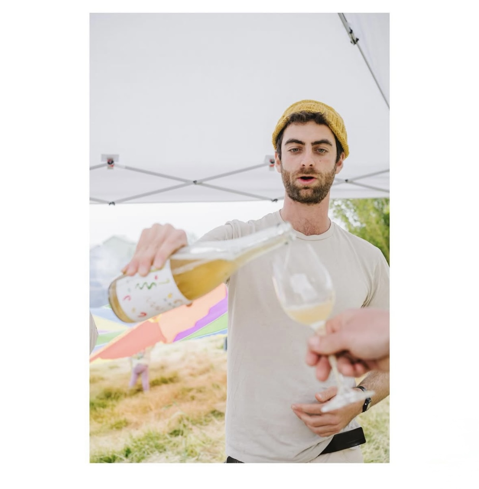

About Feral Ecology

Feral Ecology is a small natural wine making project using forgotten and under appreciated fruit from public trees, people's backyards, and from farms that can't use their produce.
We lead foraging outings, teach workshops on fermentation and wild cooking, and sell our wines made from these reclaimed fruits.
Upcoming Events
Spring Foraging Walk
May 15, 2025
City Park, North Entrance
Join us for a morning of identifying and harvesting edible urban plants.
Natural Wine Workshop
June 8, 2025
Community Kitchen
Learn the basics of fermenting foraged fruits into delicious natural wines.
Seasonal Wine Release
July 10, 2025
Farmers Market
First taste of our summer releases featuring locally foraged berries.
Gallery
Learning Resources
Recommended Books
- Wild Fermentation by Sandor Katz
- The Art of Fermentation by Sandor Katz
- Wildcrafted Fermentation by Pascal Baudar
- The New Wildcrafted Cuisine by Pascal Baudar
- Natural Wine for the People by Alice Feiring
People to Follow
- Pascal Baudar - Wild food expert and fermentation pioneer
- Sandor Katz - Fermentation revivalist
- Alice Feiring - Natural wine writer and advocate
- Jenny Dorsey - Chef and fermentation educator
Join Our Mailing List
Stay updated on upcoming events, workshops, and wine releases: